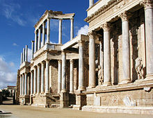

Историја
Прва писана сведочанства описују Иберију као земљу настањену Иберима, Баскима и Келтима. Након великих борби долази под власт Рима. Током средњег века њом су завладала германска племена да би недуго затим потпала под власт Мавара из северне Африке. Током вишевековне борбе мала хришћанска краљевства са севера успела су да поврате власт над полуострвом. Последње маварско краљевство пало је исте године када је Колумбо стигао да Америке. Тада је почело да се ствара глобално царство а Шпанија је наредих век и по била водећа европска и светска сила. Бројни ратови и други проблеми временом су урушили њен статус. Наполеонова инвазија је довела до хаоса у земљи, и подстакла покрете за независност у шпанским колонијама. Непосредно пре Другог светског рата Шпанију је задесио крвави грађански рат који је на власт довео диктаторски режим. Крајем седамдесетих година 20. века долази до обнове демократије а нешто касније Шпанија се придружује Европској унији, бележећи стабилан економски развој и културни препород.

Цртежи у пећини Алтамира,у Кантабрији.
Преисторија и преромански народи
На основу археолошког налазишта Атапуерка може се закључити да је Иберијско полуострво било настањено хоминидима пре 1,2 милиона година. Људи су на Иберијско полуострво дошли са севера пре 35.000 година. Најпознатији артефакти о овим преисторијским људским насеобинама су цртежи у пећини Алтамира у Кантабрији, на северу полуострва, које су начинили Кромањонци између 35.600 и 13.500 године пре нове ере.На основу археолошких и генетских истраживања долази се до закључка да је Иберијско полуострво послужило као уточиште становницима северне Европе током последњег леденог доба. Пре римског освајања Иберијско полуострво су углавном настањивали Ибери и Келти. Ибери су живели дуж медитеранске обале од североистока до југоистока полуострва. Келти су настањивали унутрашњост и атлантску обалу од северозапада до југозапада. Баски су живели у западном делу Пиринеја и у суседним областима, Тартешани су живели на југозападу а Лузитанци и Ветонци у средишњем делу запада полуострва. Дуж средоземне обале постојале су бројне трговачке насеобине Феничана, Грка и Картагињана.
Келтски кастро у А Гварди у Галицији
Римско царство и Готско краљевство
Током Другог пунског рата, између 210. и 205. пре нове ере, Рим је освојио картагињанске колоније на Средоземљу. Римљанима је било потребно скоро два века за потпуно освајање Иберијског полуострва, да би њиме владали више од шест векова. Келтско и иберијско становништво постепено је романизовано (латинизовано). Локалне вође су постале део римске аристократије а Хиспанија је постала житница Римског царства, извозник злата, вуне, маслиновог уља, и вина. Пољопривредна производња је повећана са изградњом система за наводњавање, од којих су неки још увек у употреби. Цареви Хадријан, Трајан, Теодосије I, и филозоф Сенека су рођени у Хиспанији. Хришћанство је на ово поднебље стигло у првом веку а раширило се у градовима током другог века.Већина данашњих језика у Шпанији и законодавство воде порекло из овог периода.
Римски театар у Мериди
Толедо, главни град Визиготског краљевства.
Слабљење владавине Западног римског царства у Хиспанији је почело 409, када су германска племена Свеви и Вандали, заједно са Сарматским Аланима прешли Рајну и опустошили Галију, да би их Визиготи исте године довели у Иберију. Свеви су основали краљевство на подручју данашње Галиције и северне Португалије. Распадом Западног римског царства нестало је постојеће друштвено уређење, мада су новоформиране државе задржале многе институције и законе потоњег царства, укључујући хришћанство. Хаздинзи, савезници Алана, такође су основали краљевство у Галицији, заузевши углавном исто подручје али су своју власт проширили јужно до реке Дуеро. Вандалско племе Силинзи је заузело подручје названо Вандалузија, данашња Андалузија. Византинци су на југу Иберијског полуострва основали енклаву Спанију, с циљем обнове Римског царства на овом подручју. Међутим, Хиспанија је на крају уједињена током владавине Визигота.
Шпански грађански рат
Шпански грађански рат је био сукоб у коме су се актуелна Друга шпанска република и левичарске групе бориле против побуне десничарских фашиста и националиста предвођене генералисимусом Франсиском Франком, који је у државном удару успео да свргне републиканску владу и успостави диктатуру. Овај сукоб је био резултат комплексних политичких, економских и културних подела између, како је то познати шпански писац и песник, Антонио Мачадо описао, две Шпаније. Републиканце је чинио дијапазон лево оријентисаних групација које су се кретале од центриста који су подржавали изборну демократију, до поборника комунистичких или анархистичких револуционарних промена; њихова снага је имала првенствено урбани (мада су међу њима били и сељаци беземљаши) и секуларни карактер, а били су посебно јаки у Каталонији и у релативно конзервативној Баскији — два региона којима је републиканска влада дала велику аутономију. Фашистички побуњеници који су на крају извојевали победу имали су првенствено подршку великих и богатих земљопоседника и цркве, који су подржавали централизацију власти. Војна тактика овог рата је у много аспеката наговестила акције у Другом светском рату. Иако је рат трајао само три године, политичка ситуација је већ била затегнута и пуна насиља у претходних неколико година. Број жртава је споран; процене најчешће говоре о бројци између 500.000 и 1.000.000 мртвих. Многе од ових жртава, међутим, нису биле резултат борбених дејстава, већ последица бруталних масовних погубљења која су чиниле обе стране. Рат је почео војним устанцима широм Шпаније и њених колонија, који су били праћени републиканским репресалијама против оних који су сматрани савезницима побуњеника: цркве. Чињени су масакри над католичким свештенством, цркве и манастири су били спаљивани. Дванаест бискупа, 283 калуђерице, 2.365 калуђера и 4.184 свештеника је убијено. У освит рата, Франков режим је иницирао темељно чишћење шпанског друштва од свега што је имало везе с левичарским партијама и уопште свега што је било повезано с Другом републиком, укључујући трговачке синдикате и политичке партије. Архиве су биле заплењене, извођени су претреси кућа, а непожељни појединци су често затварани, протеривани у егзил, или убијани.